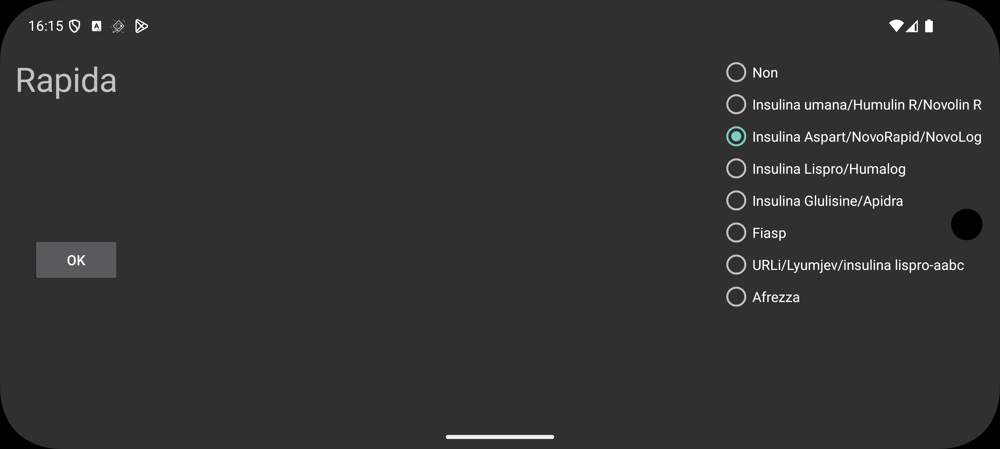

ar de es hi it ja ko nl ru tr uk uz en
L'IOB è una misura di quanta insulina rimane dalle dosi di insulina precedenti. Prima di Juggluco 9.2.0 veniva utilizzata la curva della concentrazione di insulina nel sangue di Insulin Aspart per stimare l'IOB. Ora puoi specificare il tipo di insulina e Juggluco userà una curva di concentrazione di insulina nel sangue specifica per quel tipo di insulina. Specifica No se l'etichetta non rappresenta un'insulina ad azione rapida, altrimenti specifica il tipo di insulina. Le scelte sono:
Human Insulin/Humulin R/Novolin R
Insulin Aspart/NovoRapid/NovoLog
Insulin Lispro/Humalog
Insulin Glulisine/Apidra
Fiasp
URLi
Afrezza
Come vengono determinate le formule IOB è descritto nella seguente pagina: https://www.juggluco.nl/Juggluco/IOB/overview.html
Se conosci un tipo di insulina ad azione rapida che non è menzionato, puoi inviarmi un'e-mail.